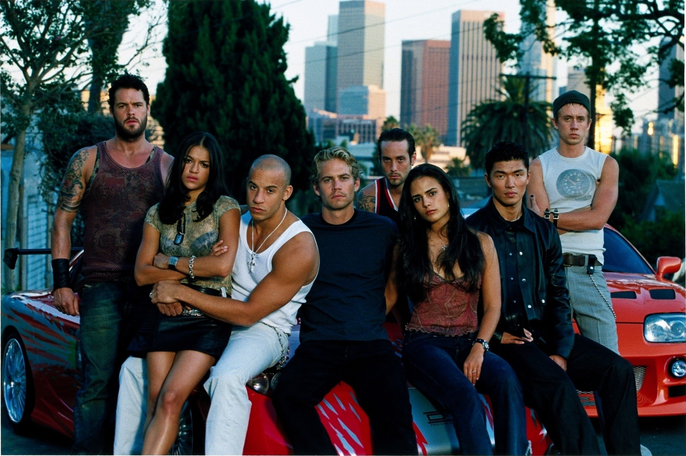
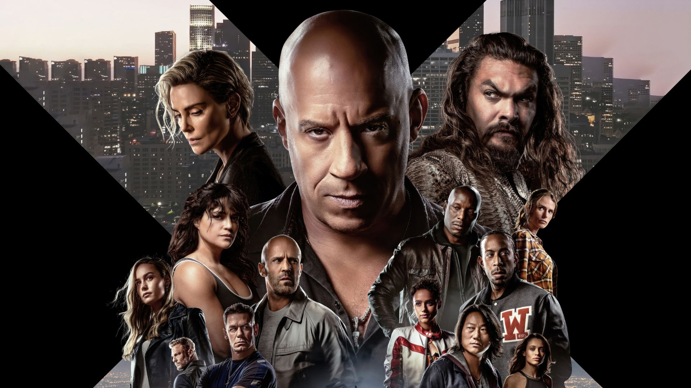

Os carros são muito importantes na franquia.
Cada modelo tem características únicas.
A franquia "Velozes e Furiosos" é definida pela evolução de seus carros, começando com foco no tunning japonês e evoluindo para muscle cars americanos e superesportivos. Ao longo de mais de duas décadas, os veículos tornaram-se personagens tão importantes quanto os atores, com destaque para o Dodge Charger de Toretto e o Nissan Skyline de Brian.